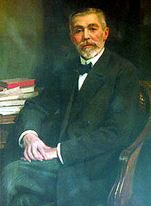

El Rey del Azúcar
Dicen que antes de morir el Rey del Azúcar pensó en una historia de Confucio y tomó la decisión de dejar toda su fortuna para educar a los más pobres de su país. El relato quedó registrado en los papeles que dejó, y “contaba la historia de un caritativo viajero que se condolió con la pobreza de los habitantes de una isla y les obsequió pescados. Frente a este gesto, el filósofo chino dijo que había hecho mal porque con su regalo comerían un día, pero si les hubiese enseñado a pescar tendrían alimentos todos los días.”
Se cuenta que siendo adolescente el Rey del Azucar conoció al comerciante frances Louis Le Quelleq. Lo que sorprendió al empresario fue la afirmación del adolescente de que “si tuviera veinte mil pesos yo los invertiría en acciones de la Compañía Sudamericana de Vapores. Al mes podría devolver esa suma y tener mi propio capital”. El hombre de negocios confió en el joven y le prestó el dinero. Cuando el francés volvió a Valparaiso le devolvió el dinero y con intereses.
El muchacho de la anécdota era Federico Santa María. Un brillante especulador de la bolsa. Tras hacer su fortuna en Chile parte a Francia en 1894. Se instala en un austero departamento en Paris y desde ahí empieza a construir su imperio bursátil. Con el tiempo llega a controlar el precio de productos esenciales. Tanto así que es interpelado por la prensa y la cámara de diputados francesa. Se le acusa de “atentar contra el pueblo francés”, se le tilda de “enemigo de toda Europa”, de “Satán”, y se pide que sea expulsado de Francia.

Joaquín Edwards Bello escribiría: “En este aspecto, don Federico Santa María aparecía trayendo rayos bìblicos de vengador: hijo de Valparaíso, la ciudad que vió salir tanto extranjero enriquecido e ingrato... Logró incrustarse en el corazón de Europa para rescatar una parte”.
Era tacaño y antisocial. La alta sociedad francesa quería codearse con él, pero se negaba a asistir a las cenas, y eventos a los que se le invitaba. Más tarde lamentaría esto porque no logró casarse y tener hijos.
Repentinamente le dió por el azúcar, pensaba que con eso favorecía a la industria salitrera chilena, pues los remolacheros necesitaban del nitrato. Los refinadores de azucar europeos van cayendo uno a uno. En abril de 1910 el diputado francés Georges Berry pregunta por el aumento injustificado del precio del azúcar, que no se explicaba puesto que la cosecha mundial de 1909 era superior a la de 1908. La respuesta fue: “pregúntele al chileno Santa María”.
“Es inadmisible que un solo especulador... pueda dictar sus precios a 39 millones de consumidores”. Se inicia un juicio en su contra. Se le pide que entregue las cifras de sus stocks: “No puedo dar la cifra de los de París, ni los de Hamburgo, ni de Londres, ni de Amsterdam, porque los intereses son demasiado grandes como para que me arriesgue a darle a mis competidores informaciones en una lucha que prosigue, los cuales no se presentan esperando arrinconarme en una venta forzada a bajo precio.”
Queda sobreseído, porque no se considera que la especulación aislada de un comerciante que se limita a comprar en tiempos de baja y revenderla en alza, aunque abarque la totalidad o mayor parte de la mercancía, constituya acaparamiento en el sentido jurídico.
Al comenzar la primera guerra mundial decide retirarse de los negocios, porque no piensa especular con el conflicto. Pero se preocupa del destino de Francia y los aliados. Tenía corazón el hombre, de hecho una vez anuló una orden al enterarse que podía arruinar a Le Quelleq, el comerciante que le prestó los veinte mil pesos en su adolescencia.
Años más tarde se supo que Santa María había adquirido una considerable cantidad de bonos de guerra y que al terminar el conflicto los entregó al gobierno francés para apoyar la reconstrucción del país que le había acogido.
Y vuelve a los negocios, en 1923, a los 78 años, y “para ver si mi cabeza aún funciona”, logra su mayor beneficio bursatil: 200 millones de francos en un día. Dos años después, en 1925 fallece don Federico Santa María, pero deja su famoso testamento, donde se establece los requisitos para fundar una universidad para Valparaiso:
“Deseo, ante todo, expresar a mis conciudadanos que los últimos treinta años de mi vida los consagré exclusivamente al altruismo, y al efecto, hice mi primer testamento en mil ochocientos noventa y cuatro, legando a la ciudad de Valparaíso una Universidad; pero, en el transcurso del tiempo la experiencia me demostró que aquello era un error y que era de importancia capital levantar al proletario de mi patria, concibiendo un plan por el cual contribuyo primeramente con mi óbolo a la infancia, en segundo a la escuela primaria, de allí a la Escuela de Artes y Oficios y por último al Colegio de Ingenieros, poniendo al alcance del desvalido meritorio, llegar al más alto grado del saber humano; es el deber de las clases pudientes contribuir al desarrollo intelectual del proletariado.”
“Dejo a mis albaceas la totalidad de mis bienes, después de satisfechos los legados y las deudas, a fin de que apliquen dichos bienes o sus productos a la creación y establecimiento en la ciudad de Valparaíso de las siguiente instituciones: UNA
ESCUELA DE ARTES Y OFICIOS, con un internado y un externado; sólo se admitirá en el internado a los alumnos que se hayan distinguido en las escuelas primarias por su inteligencia y laboriosidad; asimismo se admitirán dos alumnos o más, a juicio de la Dirección de las Instituciones, por cada provincia de Chile y que se hayan también distinguido en las escuelas de ellas; tanto la instrucción como el alojamiento, alimento y vestido, serán gratuitos; además , en el internado de la escuela, habrá salas separadas para los alumnos que se hayan distinguido a su turno en la Escuela de Artes y Oficios, y que por sus aptitudes el Consejo considere que merecen continuar sus estudios y pasar al Colegio de Ingenieros; en ningún caso se admitirán al internado de la escuela y del Colegio alumnos de parientes pudientes, pero podrán éstos matricularse en el externado de ambos establecimientos; la admisión al externado se hará conforme lo disponga la dirección suprema de las instituciones. UN COLEGIO DE INGENIEROS, en todos sus ramos, civil, ferrocarriles, fábricas, minería, hidráulica, electricidad, etc, etc, y todos aquellos otros ramos que el progreso físico implante; el internado de este colegio se hará en el internado de la Escuela de Artes y Oficios, como dicho anteriormente y sólo podrán optar a él todos aquellos que el Consejo considere aptos para seguir sus estudios, ya provengan de la Escuela de Artes y Oficios o de otras escuelas y que no tengan recursos para seguirlos; habrá, además, un externado para alumnos en general, en que el Consejo determinará si los que concurren son aptos para seguir la carrera de ingenieros. A los dos externados de la Escuela de Artes y Oficios y Colegio de Ingenieros se les servirá la misma comida que toman los internados a la hora de almuerzo. Siendo estas instituciones, por su instrucción, esencialmente laicas, toda instrucción religiosa queda de hecho prohibida dentro de los colegios, la que debe ser dada por sus parientes a domicilio. Tanto la escuela de Artes y Oficios como el Colegio de Ingenieros, y toda otra institución que pudiera crearse más tarde, deben agregar a su título el nombre de JOSÉ MIGUEL CARRERA, en homenaje al gran patriota que dio el primer grito de independencia en Chile y como enseñanza a los alumnos que ante todo se deben a su patria. "
Ese es el origen de la Universidad Técnica Federico Santa María. Santa María no tuvo hijos, y se dice que le preguntaron si hubiera tenido un hijo qué habría hecho con él: “A los 18 años lo habría echado a la calle para que se ganara la vida”.
Ese es el legado del Rey del Azúcar, un hombre que causó un impacto a nivel mundial, un especulador, un justiciero según otros, un altruista, un filántropo al final de sus días. Un ser humano, un chileno que finalmente realizó el mejor negocio, dedicar su fortuna a la educación y superación de la pobreza de sus compatriotas. Este es el relato que ojalá todos los jóvenes y personas formadas en aquella universidad conozcan, y difundan. Salud por ustedes.
Las citas son del libro “Para Saber y Contar” de Hernán Millas, editorial Planeta, 2010. La imagen de este artículo en Wikipedia